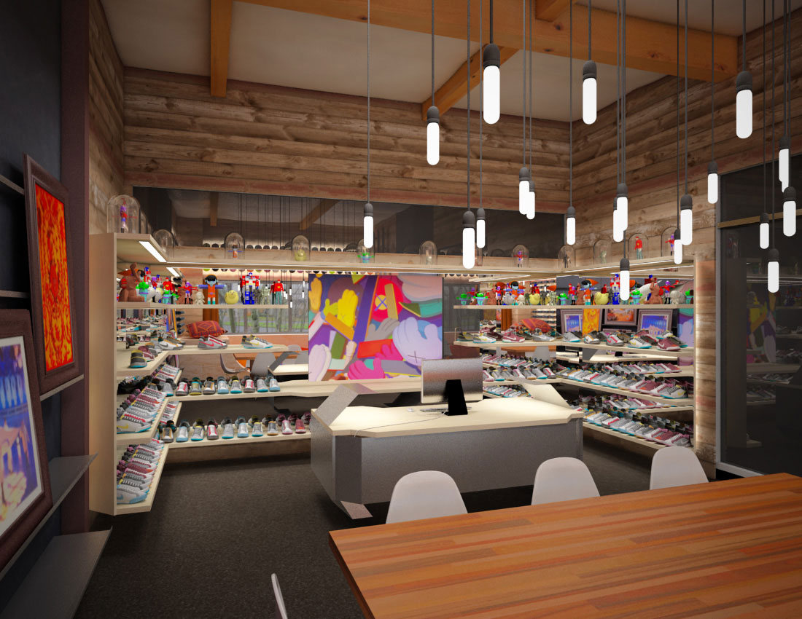
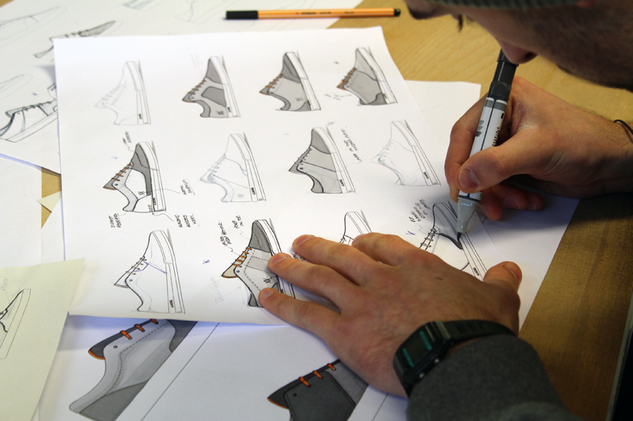
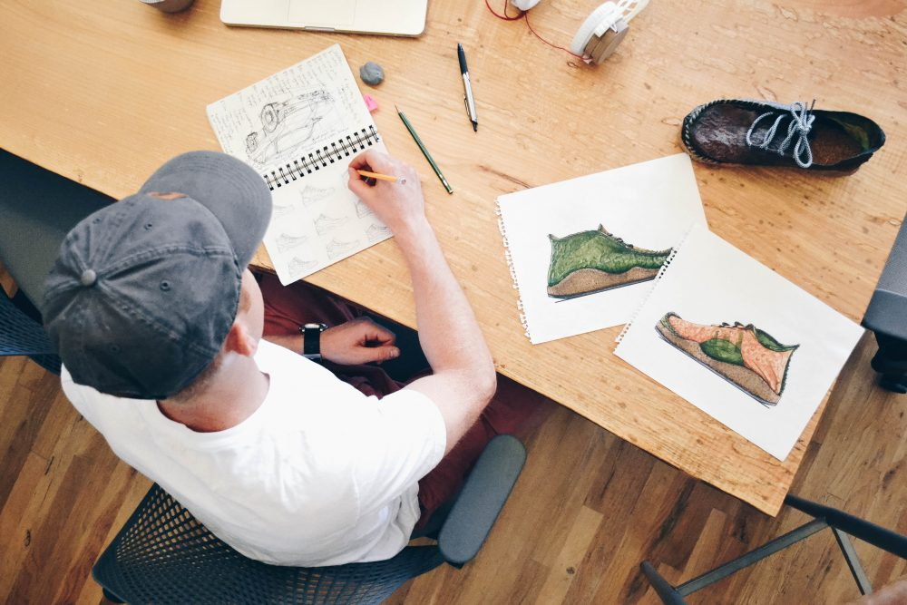

Quel est le processus de création d’un modèle ?
Lorsqu’il s’agit d’un produit conçu pour un sport, on écoute toujours ce que l’athlète a à partager. L’idée est de designer un produit qui leur permet d’atteindre leur meilleur potentiel. C’est d’ailleurs ce que je préfère dans ce métier, résoudre un problème tout en travaillant main dans la main avec les athlètes.

Quel modèle aurais-tu rêvé de designer ?
Il y a énormément de sneakers que j’aurais aimé avoir designé. Si je devais en choisir une seule, je dirais la Nike Air Max Plus TN (celle qu’on appelle la « requin » en France). À l’époque, son design était révolutionnaire et son impact en Europe démentiel ! Il n’y a pas énormément de sneakers qui ont reçu un surnom des consommateurs. La requin, c’est presque devenu son nom officiel en France. Le modèle est toujours tendance 20 ans plus tard, elle est devenue une icône.

Quel conseil donnerais-tu à quelqu’un qui voudrait devenir footwear designer ?
Essayer d’être toujours curieux et ne pas tomber dans un style spécifique en se disant que c’est sa signature. Un designer capable de créer deux modèles de sneakers totalement différent est, pour moi, bien plus impressionnant. Cela prouve notamment qu’il est en capacité de se réinventer, de prendre des risques et de changer de perspective. Il faut aussi beaucoup dessiner, tout le temps, et créer. Ne pas avoir peur de s’essayer aussi à la 3D après des dessins, cela permet d’avancer. Un footwear designer aujourd’hui doit pouvoir imaginer un design et créer la sneaker dans la même semaine. L’impact est bien important lorsque l’on présente un produit fini plutôt qu’un rendu, même si ce dernier est essentiel dans le processus de création.